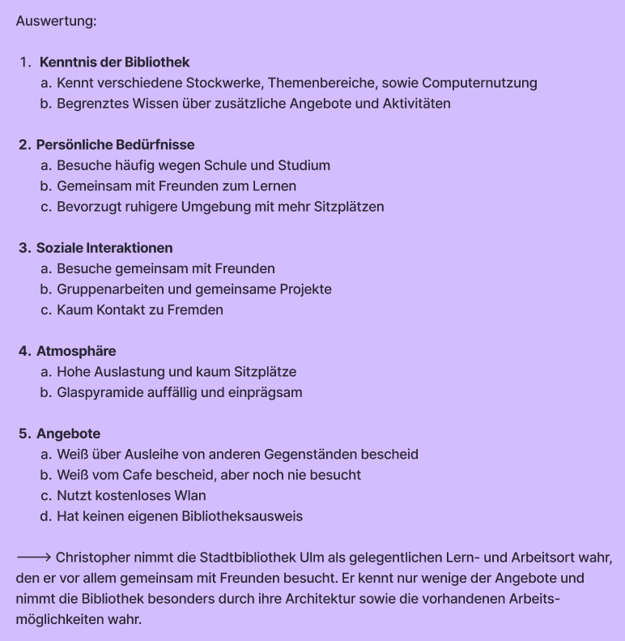
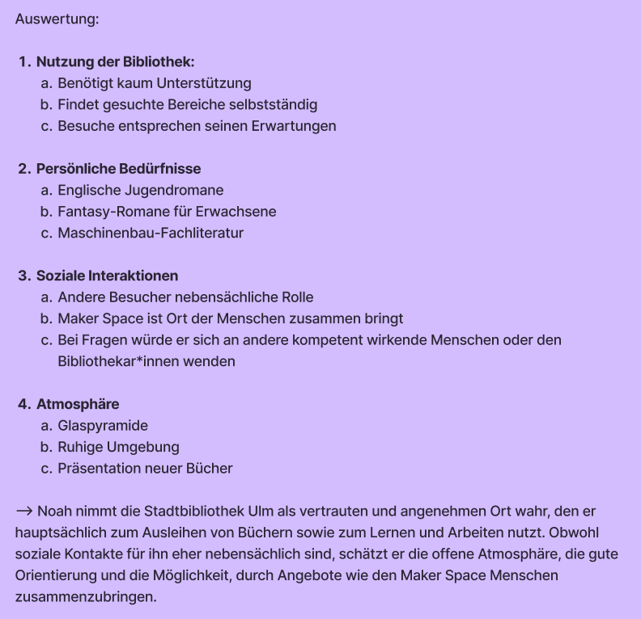
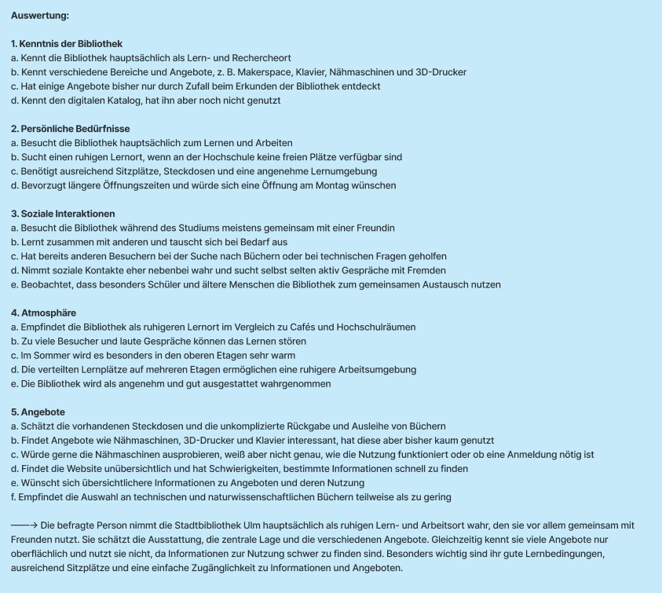

1Interview 1
Christopher, männlich, 21 Jahre Alt, Auszubildender
J.: ,,Danke, dass du dir kurz die Zeit nehmen und mit mir dieses Interview durchführen. In diesem Interview werd ich dir ein paar Fragen zu deinem Aufenthalt in der Stadtbibliothek Ulm stellen. Kannst du dich vielleicht kurz vorstellen und mir erzählen was du so gerade machst? also womit du dich im alltag beschäftigst? wo du herkommst oder ob du irgendwelche speziellen interessen hast?”
C.: ,,Ich heiße Christopher. Ich bin 21 Jahre alt und gerade noch ein wenig auf Jobsuche. Letztes jahr war ich noch am studieren, aber ich habe gemerkt, dass das eher weniger was für mich war und ich mich lieber auf andere Dinge konzentrieren will. Deshalb werd ich demnächst eine Ausbildung anfangen.Was meinen Wohnort betrifft, ist es gerad so, dass ich in Ulm geboren wurde, die meiste Zeit in Neu-Ulm gelebt habe, und jetzt in Kassel, also relativ weit weg wohne. Ich komme trotzdem immer alle paar Wochen nach Ulm um Freunde zu besuchen.”
J.: ,,Oh hört sich kompliziert an. Wie oft bist du oder warst du in der gesamten zeit die du in Ulm bzw. Neu-Ulm so verbringst so in der Regel in der Stadtbibliothek Ulm?”
C.: ,,Ich würde jetzt mal mit selten antworten? Also bedingt von der Schule aus ein paar male, wenn man damals bestimmte Literaturquellen in Form von Büchern angeben musste. War sehr hilfreich die Bibliothek in der nähe zu haben. Es war sehr nützlich die Bücher einfach schnell und ohne Probleme ausleihen zu können. Aber das liegt auch eher dran, dass meine Freunde Dinge ausleihen, da die so eine von diesen Mitgliedskarten haben. Ich glaub ich müsste ja dafür zahlen, heißt bei den paar malen, die ich hier war lohnt sich das meiner meinung nach eher weniger. Sonst einfach allgemein hier mal Zeit verbracht als sich die ein oder andere Freundesgruppe zum arbeiten oder lernen treffen wollte.”
J.: ,,Das heißt du bist normallerweise nur mit anderen Freunden hier?”
C.: ,,Ja schon eher, Ich warte gerad noch auf Personen. Die haben den Bus verpasst und brauchen wahrscheinlich noch in etwa nh bisschen bis sie hier sind.”
J.: ,,Ach mies, deshalb aber auch die freie zeit hier.”
C.: ,,Ja, ich war schon am überlegen ob ich ins Gebäude gehe und noch bisschen die Zeit vertreibe, aber passt schon.”
J.: ,,Darf man fragen wieso du nicht einfach rein gehst? Der Eintritt ist kostenlos und wärmer ist es drinnen auch”
C.: ,,Wüsste nicht was ich drinnen machen soll.”
J.: ,Dann vermute ich, du bist nicht zu sehr über die ganzen Angebote und Aktivitäten der Bibliothek informiert, oder? Darf man allgemein fragen wie gut du dich mit der Stadtbibliothek auskennst?”
C.: ,,Im Vergleich zu den ganzen Menschen, die hier wohnen wahrscheinlich sehr wenig. Ich war öfters mal drinnen und mir ist bewusst, wie es drinnen aussieht und dass es in verschiedene Stockwerke aufgeteilt ist mit so unterschiedlichen Bereiche und Themen.”
J.: ,,Und von den Aktivitäten?”
C.: ,,Naja, Ich weiß man kann Bücher und so paar andere spaßige Gegenstände ausleihen. Haben wir damals einmal gemacht, aber daran bin ich eigentlich gerade nicht zu sehr interessiert und ich besitze auch kein Bibliothekskonto, also könnt ich wenn dann eh nur vor ort lesen oder ein Spiel ausprobieren. Nur drinnen ist es eh voll, heißt draußen warten, passt schon.”
J.: ,,Ok, dann direkt zur nächsten frage: Erinnerst du dich noch daran wann du zuletzt dort warst und was der Grund für deinen Besuch war?”
C.: ,,Boah, schwierige Frage, dürfte im Frühjahr gewesen sein. Hatte zu der Zeit ein Projekt von meiner Hochschule und wollte daran zusammen mit Freunden arbeiten.”
J.: ,,Kannst du mir bisschen genauer erzählen was du dort so gemacht hast? also vom Ankommen bis zum Verlassen? Kann auch sehr ungenau sein, falls du dich nich mehr so genau erinnerst”
C.: ,,Zu der Zeit wars auf jeden fall ziemlich voll, hat also bisschen gedauert bis wir damals nen platz gefunden haben. Wir haben ein paar Bücher verwendet und das gratis WLAN genutzt.”
J.: ,,Wie habt ihr herausgefunden wo ihr hinmüsst?
C.: ,,Die Computer die in jeder Etage aufgestellt sind geben Bescheid wo sich die Bücher befinden.”
J.: ,,Gabs dabei irgendwelche Probleme?”
C.: ,,Besimmt wars irgendwie bisschen schwer die zu finden, aber sonst kann ich mich leider nicht mehr genau dran erinnert.”
J.: ,,Das ist ok, war ja schon nh weile her, dann darauf noch als Frage: Wolltest du bei dem Besuch etwas bestimmtes erreichen?”
C.: ,,An sich einfach das Projekt fertigstellen. In Person wars produktiver dran zu arbeiten als Online. Ist meistens der fall, nur das wir sonst so Kaffees oder bei jemandem Zuhause als Option wählen.
J.: ,,Wusstest du bzw deine Freunde denn auch, dass es hier im Gebäude ebenfalls ein Kaffee gibt?”
C.: ,,Schonmal davon gehört, aber es nie ausprobiert. Im obersten Stock, gel?”
J.: ,,Ja, befindet sich ganz oben. Gab es sonst noch irgendetwas, das dich bei dem Besuch überrascht hat?”
C.: ,,Nur, dass wirklich so viel los war, dachte eigentlich dass die Bibliothek eher weniger besucht wird.”
J.: ,,Spielen die anderen Menschen für ihren Aufenthalt dort eine große Rolle?”
C.: ,,Es ist halt schon angenehmer, wenn ein bisschen weniger los ist und es ruhiger ist, trotz dem Fakt, dass es sich um eine Bibliothek handelt.”
J.: ,,Hast du dort schon einmal mit jemandem gesprochen, den du davor nicht kanntest? Falls ja, wie ist das dazu gekommen?”
C.: ,,Ich glaube so richtig gesprochen eher nicht. Nur bei Fragen mal bei der Rezeption nachgefragt. Die waren sehr nett.”
J.: ,,Das heißt, sie haben aber selber noch nie mit so anderen Besuchern geredet.Haben sie schon einmal erlebt, dass Besucher sich gegenseitig geholfen oder Wissen miteinander geteilt haben? Können sie davon erzählen?”
C.: Bestimmt mal über diesselben Interessen ausgetauscht, wenn es Personen gibt, die so die gleichen Bücher mögen? An sich bin ich aber auch eher am raten, glaube die meisten Personen nutzen den Ort zum arbeiten und weniger um Wissen miteinander zuteilen.”
J.: Oh ok, Danke. Dann zur nächsten Frage. Was gefällt dir an der Stadtbibliothek Ulm besonders? Gibt es unterschiede zu der Bibliothek in Kassel?
C.: ,,Die Glaspyramide fällt einem schon sehr ins Auge. Ich glaube die Architektur bleibt an sich jedem im Gedächtnis, egal ob man weiß ob es sich um eine Bibliothek handelt oder eben nicht. In der Bibliothek in Kassel war ich leider noch nie, also keine Ahnung.”
J.: Ok, danke für das Beantworten der Fragen und deiner Zeit. Das genügt bereits!

2Interview 2
Noah, männlich, 20 Jahre Alt, Maschinenbau-Student
J.: ,,Danke, dass sie sich kurz die Zeit nehmen und mit mir dieses Interview durchführen. Ich würde sie ein paar Fragen zu ihrem Aufenthalt und so einzelnen kleinen Erfahrungen aus der Stadtbibliothek Ulm stellen. Könntest du dich kurz vorstellen, vielleicht kurz erzählen, was du gerade machst und womit du dich so im Alltag beschäftigst?
N.: ,,Mein Name ist Noah, Ich mache gerade im Moment ein duales Studium im Maschinenbau”
J.: ,,Wie gut kennst du die Stadtbibliothek Ulm?”
N.: ,,Ich kenne die Stadtbibliothek sehr gut und gehe eigentlich recht regelmäßig hierher.”
J.: ,,Wann warst du das letzte mal in der Stadtbibliothek Ulm und was war der Grund für deinen Besuch?”
N.: ,,August - Romane ausleihen”
J.: ,,Bei deinem letzten Besuch in der Bibliothek, erinnerst du dich noch was du vom Ankommen bis zum Verlassen gemacht hast?”
N.: ,,Rein gelaufen, 1. Stock Erwachsenen Fantasy Romane - Buchrücken gelesen - Entscheidung getroffen”
J.: ,,Was wollten sie bei diesem Besuch erreichen?”
N.: ,,Lesestoff finden”
J.: Wie hast du herausgefunden, wo du hinmüsst oder was du machen musst?
N.: ,,Vor Ewigkeit an den Rechnern nachgesehen und dann weiß man das halt”
J.: ,,Gab es einen Moment, in dem sie nicht genau wussten, wie etwas funktioniert oder wo sie etwas finden?
N.: ,,Nope, aber bin halt schon ewig "Kunde" der Stadtbibliothek
J.: Ist etwas anders gelaufen, wie du es erwartest hast?
N.: ,,War genauso wie erwartet
J.: ,,Welche Bereiche der Bibliothek besuchst du normalerweise?”
N.: ,,Englischsprachige Jugendromane und Erwachsenen Fantasy und Maschinenbau Fachbücher”
J.: ,,Gibt es etwas, das du gerne ausprobieren würdest, bisher aber noch nicht ausprobiert hast?”
N.: ,,Es gibt nichts was ich gerne ausprobieren möchte”
J.: ,,Wie entscheiden sie, wo sie sich in der Bibliothek aufhalten und wie lange sie bleiben?”
N.: ,,Meine eigene Stimmung und ob ich schnell oder langsam ein Buch finde”
J.: ,,Besuchst du die Bibliothek normalerweise alleine oder mit anderen?”
N.: ,,Meistens alleine
J.: ,,Welche Rolle spielen andere Menschen für ihren Aufenthalt dort?
N.: ,,Eine nebensächliche Rolle, man muss ja nicht mit den Menschen interagieren...
J.: ,,Welche Angebote oder Bereihe bringen ihrer Meinung nach Menschen zusammen?
N.: ,,Maker Space bringt Leute zusammen”
J.: ,,Haben sie schonmal erlebt, dass Besucher sich gegenseitig geholfen oder Wissen miteinander geteilt haben?
N.: ,,Wenn man was sucht und es nicht findet und jemand da steht der so aussieht wie wenn er nen Plan hätte dann fragt man den halt...”
J.: ,,Was gefällt ihnen an der Stadtbibliothek besonders?
N.: ,,Offene warme Atmosphäre durch Glas Baustil, gutes Katalogsystem mit dem man schnell Bücher die man sucht findet, das neue Bücher hervorgehoben hingestellt werden
J.: ,,Was kan die Stadtbibliothek ihrer Meinung nach besser als andere Orte, an denen man lernen, arbeiten oder Zeit verbringen kann?
N.: ,,Da die Stadtbücherei ein relativer Stiller Ort ist und Tische bietet und sogar Räume für Gruppen für Gruppenarbeit kann man sich hier gut konzentrieren und dementsprechend gut lernen”
J.: ,,Was kann die Stadtbibliothek ihrer Meinung nach besser als andere Orte, an denen man lernen, arbeiten oder Zeit verbringen kann?”
N.: ,,Falls etwas unklar ist, im Zweifel die Biblitohekar*innen fragen, die können das rausfinden und sind super nett!”
J.: ,,Das wärs dann auch schon. Danke fürs mitmachen!”

3Interview 3
Anastasia , weiblich, 22 Jahre Alt, Master-Psychologie Studentin
Platzhaltertexttttt, tipp einfach alles hier ein und jedesmal wenn du nen Zeilenumbruch einfügen willst, schreib
dahinter :3
4Interview 4
Sascha, männlich, 23 Jahre alt, Sozialpädagogik-Student
L: Hey, danke, dass du dir Zeit für unsere Fragen nimmst. Zuerst würde mich interessieren, wer du bist, also was du gerade machst und wie alt du bist.
S: Kein Problem. Ich bin Sascha, 23 Jahre alt und studiere zurzeit Sozialpädagogik.
L: Wie gut kennst du die Stadtbibliothek Ulm?
S: Ich würde sagen, dass ich sie ganz okay kenne. Ich weiß, wo ich meine Bücher fürs Studium finden kann und wo man einen guten Platz zum Lernen findet.
L: Leihst du nur Bücher aus oder nimmst du auch mal Filme, CDs oder Spiele mit?
S: Bis jetzt habe ich mir nur Bücher ausgeliehen. Filme und CDs bekommen wir von der Uni beziehungsweise schauen oder hören wir uns vor Ort an.
L: Das heißt, du bist in der Bibliothek eher, um dir Unimaterialien zu holen beziehungsweise zu lernen, statt dir auch privat Bücher auszuleihen, die du gerne lesen würdest?
S: Ja, bis jetzt ist die Bibliothek mein Go-to-Lernort. An sich würde ich gerne mehr Bücher ausleihen, die ich privat lese, oder auch Spiele. Aber durch den ganzen Unistress komme ich nicht wirklich dazu.
L: Erinnerst du dich noch an deinen letzten Besuch in der Bibliothek? Kannst du erzählen, was du vom Ankommen bis zum Verlassen gemacht hast?
S: Also, das letzte Mal bin ich zur Bibliothek gegangen, um meine Vorlesung in Ruhe nacharbeiten zu können. Als ich ankam, war unten relativ viel los, glaube ich. Deswegen bin ich direkt in den zweiten Stock hoch, um etwas mehr Ruhe zu haben. Als ich oben war, habe ich direkt nach einem Platz zum Lernen gesucht. Danach habe ich dort eine Weile gelernt. Am Ende bin ich wieder gegangen.
L: Wie hast du herausgefunden, wo du hinmusst oder was du machen musst?
S: Man weiß ja schon, dass die Bibliothek ein Ort zum Lernen ist. Wenn ich raten müsste, hat mir damals bestimmt ein Lehrer oder eine Lehrerin vorgeschlagen, in der Bibliothek zu lernen, oder meine Eltern. Ah, wenn du meintest, wo ich mich vor Ort orientiert habe: Ich habe mich an den Anzeigetafeln orientiert, damit ich das Abteil finde, das ich suche. Die Lernplätze habe ich wohl einfach nebenbei gesehen, als ich meine Bücher herausgesucht habe.
L: Gab es einen Moment, in dem du nicht genau wusstest, wie etwas funktioniert oder wo du etwas findest?
S: Beim ersten Mal Ausleihen hatte ich keinen Plan, wie das ging, aber das hat sich dann schnell geklärt.
L: Ist etwas anders gelaufen, als du es erwartet hast?
S: Anders gelaufen ist nichts, aber ich hätte nicht erwartet, dass die Bibliothek so viel mehr zu bieten hat als nur Bücher. Da ich jetzt doch öfter da bin und auch ein wenig mehr herumgehe, konnte ich erst wirklich den ganzen Rest sehen.
L: Welche Bereiche der Bibliothek besuchst du normalerweise?
S: Wie schon gesagt, bin ich eher in meinem „Fachbereich“ unterwegs. Ich gehe in das Abteil, in dem die ganzen Bücher zu Pädagogik, Erziehung und zum Teil auch Psychologie stehen.
L: Gibt es etwas, das du gerne ausprobieren würdest, bisher aber noch nicht ausprobiert hast?
S: Ich würde echt gerne, wenn ich mehr Zeit habe, mit meinen Freunden in der Bibliothek ein paar Brettspiele spielen – einfach, damit ich den Ort auch anders kennenlernen und Spiele ausprobieren kann, ohne sie kaufen zu müssen.
L: Wie entscheidest du, wo du dich in der Bibliothek aufhältst und wie lange du bleibst?
S: Das kommt ganz darauf an, wie viel ich vorhabe. Ich versuche schon, ein oder zwei Stunden zu bleiben, damit ich meine Aufgaben fertig bekomme. Ab und zu bleibe ich auch länger, falls es mehr zu tun gibt, oder gehe früher, falls ich mich nicht konzentrieren kann.
L: Besuchst du die Bibliothek normalerweise alleine oder mit anderen?
S: Ich glaube, es ist relativ ausgeglichen. Die eine Hälfte der Zeit bin ich allein und die andere Hälfte mit Uni-Freunden hier.
L: Welche Rolle spielen andere Menschen für deinen Aufenthalt dort?
S: Also, ich finde, dass es mit meinen Uni-Freunden um einiges besser ist. Klar ist man manchmal nicht ganz so produktiv, aber dafür verbringe ich Zeit mit anderen.
L: Welche Angebote oder Bereiche bringen deiner Meinung nach Menschen zusammen?
S: Ich finde, gemeinsames Lernen bringt Menschen zusammen – egal, ob es für die Uni ist oder ob man gemeinsam ein neues Spiel lernt.
L: Was gefällt dir an der Stadtbibliothek besonders?
S: Ich würde sagen, dass ich nichts kaufen muss. Ich kann einfach hier sein und lernen.
L: Das wäre es dann auch schon. Danke fürs Mitmachen!
5Interview 5
Iuri, Männlich, 24 Jahre Alt
A: Thank you for taking a moment of your time to do the interview with us. In this interview we will ask you a couple of questions about your time in the city library. Could you please tell us a little bit about yourself?
I: Hello I'm glad to be of help, I'm Iuri, I'm 24 years old and I came here to visit a friend here in Germany I'm currently waiting for her.
A: I see so you're from a different country. Could you tell us which country you're from?
I: Why yes I can, I come Belgium, it's one of the neighbouring countries to Germany about 6 hours away by train.
A: Is this your first time at the city library then? Or have you been here before?
I: It is the first time I'm at this city library, i must say its beautiful.
A:I'm glad to hear that you like our library here. How would you say this library compares to the one from your home in Belgium?
I: If I were to describe it, there's definitely a distinction between the amount of utility in the libraries themselves. Back home we don't have more than the computers and the books, hell we don't really even have communal areas.
A: I see. So in your opinion do you prefer a library as a place of quiet, where you just go to read and study or would you say the library would make a good communal space?
I: I'd like to think it makes a good communal space it definitely has its charm while quiet and studious, but if that were the case I would read at home if i really preferred that quiet atmosphere.
A: Do you visit the library with your friends often?
I: No I do not, usually when I go to the library I'm by myself i tend to lose track of everything while reading, so i would find it unfair to have company while that happens.
A: So then what role would you say other people play in your time spent in the library?
I: I'd say that they tend to have either small talk or like suggestions for certain books or genres It's usually a positive note to my library visit.
A: How often would you say do you come into contact with strangers in the library as in starting a conversation or getting asked to do something?
I: It's a pretty normal occurrence I would say. I take a glance and if I happen to see a person that is looking at a book I may know, or if I potentially could help them I'd approach them for conversation.
A: Are there situations in which you would like to use the library together with others?
I: I'd say probably with friends that would like to be outside together and the library is the first thing that comes to mind
A: That's very interesting to hear because from our observations not many people actually use the conference table in the community area. Would you say if your library had that you and your friends would use it?
I: I find that quite unfortunate as that would be the perfect place to get together and you know have a little chat and a read, we definitely would use the community area ourselves if given the opportunity.
A: Maybe the conference table is being taken from granted here. But that aside, is there anything that bothers you or wastes your time when using the library?
I: That might be so but that's not my place to speak on, there's nothing really that bothers me in or wastes my time necessarily besides maybe idlers that remain stuck in the way?
A: I see. Since this is your first visit, I will ask you on your next visit to Germany would you consider coming here again to spend some more time or is this a one time thing?
I: Yes I would like to come back here next time I'm here in Germany, maybe with some Company while I'm at it, i have thoroughly enjoyed it.
A: What did you enjoy in this library in particular?
I: I enjoyed the atmosphere and the diversity in the books it's quite the difference from the usual library I'm used to back home
A: Well I'm glad to hear that you enjoyed your visit here. Thank you very much for taking your time to do this interview with us. Have a nice day.
I: I'm glad I was able to help and thank you for asking me, may you have a nice day as well.

6Interview 6
Anonym, Weiblich, Medizintechnik-Studentin

7Interview 7
Anonym, weiblich, Öffentlichkeitsarbeit der Stadtbibliothek Ulm
Sprecher 1: Herzlich willkommen und danke, dass Sie sich die Zeit nehmen, uns ein Interview über die Stadtbibliothek Ulm zu geben. Die erste Frage wäre: Welche Aufgaben haben Sie generell in der Bibliothek? Welche Aufgaben übernehmen Sie?
Sprecher 2: Ich bin Leiterin der Öffentlichkeitsarbeit. Darunter fallen klassische Pressearbeit für die Stadtbibliothek, Marketing, die Gestaltung von Infomaterial, Social Media, Website, Veranstaltungsarbeit und vieles mehr.
Sprecher 1: Und wie lange arbeiten Sie bereits in der Bibliothek?
Sprecher 2: Seit etwa eineinviertel Jahren.
Sprecher 1: Wie lange hat es ungefähr gedauert, bis Sie sich in der Bibliothek auskannten? Und wie beobachten Sie, dass sich die Kundinnen und Kunden in der Bibliothek orientieren?
Sprecher 2: Bei mir persönlich ging es durch den Job recht schnell. Ich verbringe hier ja auch 40 Stunden die Woche. Da ich in meinem Berufsfeld mit allen aus der Bibliothek zu tun habe, habe ich mich sehr schnell zurechtgefunden. Mir war aber wichtig – und das gehört auch zu meinem Aufgabenbereich –, dass sich die Kundinnen und Kunden gut zurechtfinden. Deswegen habe ich zum Beispiel neben den Aufzügen Übersichten installiert, damit sie sich schon vor dem Betreten des Aufzugs orientieren können: auf welchem Stockwerk sie sich befinden und wo sie genau hinmöchten. Die Interessengebiete sind dort ausgeschrieben, damit sie wissen, wohin sie möchten.
Sprecher 1: Wie oft werden Sie in der Regel angesprochen, zum Beispiel, wenn Sie unten am Schalter sind?
Sprecher 2: Ich selbst bin im Erdgeschoss tatsächlich nicht oft am Schalter. Ich habe aber die Rückmeldung bekommen, dass diese Navigation beziehungsweise Orientierungshilfe sehr geholfen hat und die Rückfragen deutlich abgenommen haben. Bis dato standen im Aufzug nur Abkürzungen oder Signaturen. Da hat man schon beobachtet, dass die Leute in den Aufzug laufen und nicht so richtig wussten, wohin sie sollen und was sie drücken müssen. Die Übersicht hat die Orientierung erleichtert. Wir wollen sie durch neue Beschriftungen und Ähnliches weiter optimieren.
Sprecher 1: In welchem Bereich der Bibliothek arbeiten Sie normalerweise, abgesehen von Ihrer Marketingarbeit?
Sprecher 2: Im Bibliotheksteam arbeiten eigentlich alle auch an der Infotheke mit, sei es im Bedarfsfall oder regelmäßig. Man ist entweder an der Infotheke, im Büro oder im Haus unterwegs.
Sprecher 1: Wie sieht ein typischer Arbeitstag für Sie aus?
Sprecher 2: Einen typischen Arbeitstag kann man bei meinem Job tatsächlich nicht beschreiben. Entweder bin ich den ganzen Tag außer Haus und habe Meetings mit der Presse, anderen Kulturinstitutionen oder städtischen Institutionen. Oder ich sitze einen Tag nur im Büro und mache Infomaterial oder Textliches. Manchmal verbringe ich auch einen kompletten Tag hier im Besprechungsraum, wo wir über strategische Vorgehensweisen sprechen.
Sprecher 1: Besuchen Sie die Bibliothek auch außerhalb Ihrer Arbeit? Falls ja, gehen Sie lieber allein oder mit anderen?
Sprecher 2: Nein, ich nutze tatsächlich meine Arbeitszeit, um mich persönlich vor oder nach der Arbeit mit Material einzudecken.
Sprecher 1: Welche Rolle spielen andere Menschen für Ihren Aufenthalt in der Bibliothek, privat und beruflich? Also: Was tun Sie direkt mit den Menschen?
Sprecher 2: Jetzt speziell in meinem Aufgabenbereich?
Sprecher 1: Zum Beispiel solche Interviews mit uns führen?
Sprecher 2: Ich verstehe die Frage ehrlich gesagt immer noch nicht so richtig. Also, wie ich mit den Kundinnen und Kunden interagiere?
Sprecher 1: Ja, genau.
Sprecher 3: Ich glaube, die Frage deckt sich nicht mit der Antwort davor. Wenn Sie gemeint haben, dass Sie Ihre Arbeitszeit nutzen, um in der Bibliothek zu sein, bezieht sich die Frage, glaube ich, darauf, ob es für Sie relevant ist, wenn Sie privat herkommen, ob andere Menschen dabei sind. Würden Sie privat eher hierherkommen, wenn Sie mit Freunden oder mit der Familie hierherkommen?
Sprecher 2: Gemischt, würde ich sagen. Entweder beschaffe ich mir allein Bücher, aber ich finde, es ist auch ein toller Treffpunkt. Vor allem oben an der Spitze, wenn man sich auf einen Kaffee trifft oder so.
Sprecher 1: Okay, kommen wir zu den allgemeinen Fragen zur Stadtbibliothek. Die Leitfrage ist: Welche Rolle spielt die Stadtbibliothek als Gemeinschaft in Ulm?
Sprecher 2: In den letzten Jahren hat sich eine schöne Entwicklung ergeben: Bibliotheken haben sich von Orten der reinen Medien- oder Bücherbeschaffung zu zentralen Treffpunkten entwickelt. Das merken wir auch. Wir sind nicht mehr nur ein Ort zum Ausleihen, sondern im Prinzip ein dritter Ort neben Zuhause und Arbeit – für viele wie ein zweites Wohnzimmer. Und wir liegen mitten in der Stadt. Was uns besonders auszeichnet: Wir sind konsumfrei. Man muss kein Geld ausgeben, um sich hier aufhalten zu dürfen. Hier kommen unterschiedlichste Menschen zusammen, um zu lernen, zu arbeiten, Zeit zu verbringen, Teil der Stadt zu sein oder sich zu informieren. Sie sind unterschiedlichen Alters, haben unterschiedliche sozioökonomische Hintergründe und kommen aus dem In- und Ausland – darunter auch Touristinnen und Touristen sowie Bewohnerinnen und Bewohner.
Sprecher 1: Beobachten Sie, dass Besucherinnen und Besucher auch außerhalb von Freundesgruppen miteinander in Kontakt kommen?
Sprecher 2: Dazu möchten wir künftig noch mehr beitragen. Ich sage nicht „animieren“, aber wir möchten auf jeden Fall fördern, dass wir nicht mehr nur ein stiller Ort sind. Das sind wir durch die Initiative verschiedener Kolleginnen schon länger nicht mehr. Das Miteinander fördern wir jetzt auch durch Maßnahmen wie neue Möblierung. Im Erdgeschoss befindet sich ein großer Community Table – der Name sagt es schon: Man soll miteinander in Kontakt kommen und sich austauschen. Außerdem gibt es verschiedene Möglichkeiten für Gruppen, sich hier zu treffen. Workshops und Veranstaltungen sind natürlich ebenfalls Begegnungs- und Austauschorte.
Sprecher 1: Haben Sie beobachtet, ob es bestimmte Bereiche oder Angebote gibt, die Menschen besonders zusammenbringen?
Sprecher 2: Da würde ich unser Veranstaltungsangebot hervorheben. Das reicht von den Bücherbabys, bei denen sich Mütter oder Väter mit ihren Kleinsten treffen und das Kind sein erstes Buch bekommt, über Jugendliche, die sich hier treffen – wir haben ja eine große Kinder- und Jugendbibliothek – bis hin zu Workshops im Makerspace, Kulturveranstaltungen und Angeboten für Erwachsene wie unserem Silent Book Club.
Sprecher 1: Gibt es Bereiche oder Angebote, die Sie gerne einführen würden, aber noch nicht können? Warum ist das so?
Sprecher 2: Bei den Bereichen weiß ich nicht, ob Sie etwas Räumliches meinen. Was das Angebot betrifft, wünscht sich die Kundschaft natürlich oft ausgeweitete Öffnungszeiten, um die Bibliothek noch öfter nutzen zu können. Das ist ganz einfach ein Kostenfaktor.
Sprecher 1: Welche unterschiedlichen Gruppen beobachten Sie generell unter den Nutzerinnen und Nutzern der Bibliothek, abgesehen von den vielen Studierenden?
Sprecher 2: Wie gesagt, bei uns finden sich wirklich alle Ziel- und Altersgruppen, was uns sehr freut. Die Kinderbibliothek ist einer der absoluten Lieblingsbereiche. Dort finden sich Familien mit Kindern und Kleinkindern. Schülerinnen und Schüler sind inzwischen ebenfalls immer häufiger bei uns. Die Arbeits- und Lernplätze sind in der Regel voll und werden gern genutzt. Wir haben auch eine große Gruppe älterer Erwachsener, Seniorinnen und Senioren, für die es fest zum Tagesablauf gehört, in die Bibliothek zu kommen und Zeitung zu lesen. Für junge Erwachsene und Erwachsene gehört es ebenfalls dazu, sich hier Literatur zu holen – zur Unterhaltung oder zur Weiterbildung.
Sprecher 1: Sie haben erwähnt, dass sich die Nutzung in den letzten Jahren verändert hat. Was hat sich ungefähr geändert?
Sprecher 2: Der Wandel ging vom reinen Ausleih- und Beschaffungsort hin zu einem Ort, an dem man sich aufhalten möchte: als Rückzugsort oder konkreter Lern- und Arbeitsort. Ich würde sagen, es ist auch eine Abgrenzung zum eigenen Zuhause. Viele nutzen die Bibliothek außerdem zum digitalen Arbeiten. Wir haben eine gewisse technische Ausstattung und freies WLAN, die man nutzen kann und die nicht jeder Mensch aus finanziellen Gründen zu Hause hat. Außerdem haben wir hoffentlich eine schöne Aufenthaltsqualität, sodass die Leute gerne hier sind.
Sprecher 1: Haben Sie noch andere Beobachtungen gemacht? Was nutzen die Besucherinnen und Besucher außer Büchern und Medien oder zum Lernen und Unterhalten?
Sprecher 2: Vieles habe ich schon gesagt. Wir legen großen Wert darauf, Lese-, Sprach- und Informationskompetenz zu fördern – durch Veranstaltungen, Workshops, unser Angebot und unseren Bestand. Wichtig ist für uns auch, Informationen für alle zugänglich zu machen, unabhängig davon, woher eine Person kommt, wie alt sie ist oder welchen finanziellen Status sie hat. Wir möchten lebenslanges Lernen fördern, aber die Bibliothek dient natürlich auch der Freizeitgestaltung. Im Prinzip sind wir ein Kultur- und Bildungsort.
Sprecher 1: Sie haben erwähnt, dass auch ältere Menschen regelmäßig kommen. Gibt es außer Studierenden noch andere Besuchergruppen, die regelmäßig kommen?
Sprecher 2: Ja, alle, die ich bereits genannt habe.
Sprecher 1: Welche Bedürfnisse oder Wünsche äußern Besucherinnen und Besucher besonders häufig?
Sprecher 2: Aktuell geht es zum einen um den Wunsch, dass wir ein Treffpunkt und Aufenthaltsort für Gruppen sind. Dem gegenüber steht das Bedürfnis nach Ruhe und Rückzug. Wir versuchen gerade, Konzepte zu erarbeiten, mit denen wir allen Bedürfnissen gerecht werden und dafür sorgen können, dass sich alle wohlfühlen. Ansonsten kommen die unterschiedlichen Besucherinnen und Besucher mit unterschiedlichen Zielen hierher: zum Lesen, zur Fort- und Weiterbildung, um ihre Kinder mit Medien auszustatten, für ein kurzes Gespräch oder einfach, um nicht allein zu sein.
Sprecher 1: Gibt es eine Altersgruppe, die die Bibliothek eher weniger nutzt, die Sie aber gerne stärker erreichen würden?
Sprecher 2: Das würde ich spontan tatsächlich nicht sagen. In der Veranstaltungsarbeit war es uns wichtig, junge Erwachsene und Erwachsene zu erreichen, die sich vielleicht nicht für Kultur interessieren. Wir haben viele Kulturveranstaltungen und ein großes Kinderveranstaltungsangebot, aber das Dazwischen wollten wir stärker abdecken.
Sprecher 1: Was macht die Bibliothek Ihrer Meinung nach zu einem angenehmen Aufenthaltsort?
Sprecher 2: Wie gesagt, versuchen wir, durch die Möblierung die Aufenthaltsqualität zu steigern. Sicherlich trägt auch die Atmosphäre dazu bei. Die Zentralbibliothek ist ein besonderes Gebäude. Ich muss aber auch erwähnen, dass wir Stadtteilbibliotheken und unsere Fahrbibliothek haben, die verschiedene Orte anfährt. Uns ist wichtig, überall für die Menschen erreichbar zu sein, unabhängig davon, in welchem Stadtteil sie wohnen. Wir sind für die Leute da und ansprechbar, beraten sie, und bei uns gibt es keinen Kaufzwang. Außerdem ist die Bibliothek barrierefrei und vieles mehr.
Sprecher 1: Können Sie sich an eine besondere Situation erinnern, in der Besucherinnen und Besucher miteinander in Kontakt gekommen sind?
Sprecher 2: Ich würde keine einzelne Situation hervorheben, weil es jedes Mal bei den Bücherbabys schön ist und die Leute jeden Sommer bei „Kultur auf Stufen“ wieder zusammenkommen.
Sprecher 1: Wir haben schon über Veranstaltungen und Workshops gesprochen, aber der Makerspace kam noch nicht so richtig zur Sprache. Welche Rolle spielt er Ihrer Meinung nach in der Bibliothek?
Sprecher 2: Für uns ist der Makerspace vor allem ein Ort, an dem man eigene Projekte kreativ umsetzen kann, ohne selbst Geld für Geräte ausgeben zu müssen, die zum Teil recht teuer sind und die sich nicht jeder leisten kann. Er ist auch Teil des lebenslangen Lernens, das in unserem Leitbild verankert ist. Jeder soll sich weiterbilden können, nicht nur durch Lesen, sondern auch durch Machen – zum Beispiel Nähen, Lasercutting und 3D-Druck. Man wird selbst aktiv, lernt voneinander, unterstützt sich gegenseitig und bereichert sich mit Ideen. Wir entwickeln außerdem immer wieder neue Workshops, in denen man gemeinsam näht und Dinge gestaltet. So entstehen natürlich auch Kontakte. Das ist schön.
Sprecher 1: Was funktioniert Ihrer Meinung nach besonders gut, wenn Menschen hier zusammenkommen, zum Beispiel im Makerspace?
Sprecher 2: Besonders gut? Nichts Spezielles, würde ich sagen. Insgesamt hoffen wir, alle mit ihren Bedürfnissen, Wünschen und Zielen abzuholen und alle Zielgruppen abzudecken.
Sprecher 1: Was unterscheidet die Stadtbibliothek von anderen öffentlichen Aufenthaltsorten? Was ist Ihrer Meinung nach in der Bibliothek besser?
Sprecher 2: Mit „besser“ würde ich gar nicht anfangen und auch nicht vergleichen, sondern kann nur für uns sprechen: Wir sind ein konsumfreier Raum. Bei uns kann man sich unabhängig von Herkunft, Status und finanziellen Möglichkeiten aufhalten. Außerdem vereinen wir Bildung, Kultur und Informationszugang unter einem Dach. Hier kann man einfach sein, ohne etwas kaufen zu müssen, und wir sind für alle zugänglich.
Sprecher 1: Wie sehen Sie die Bibliothek im Bereich der Digitalisierung, da sich der Standort immer mehr in Richtung Digitalisierung entwickelt?
Sprecher 2: Ich würde sagen, wir sind sehr stark aufgestellt. Zum einen mit unserem Angebot: Wir haben inzwischen ein großes Online-Angebot mit der Onleihe. Zum anderen mit unserem Veranstaltungsangebot. In Workshops behandeln wir auch die Themen KI und Fake News und schulen Schülerinnen und Schüler sowie die breite Öffentlichkeit. Das ist für alle kostenlos. Auch unser Veranstaltungsangebot und unsere Ausstattung sind kostenlos. WLAN gibt es inzwischen wahrscheinlich überall, aber wir bieten auch entsprechende digitale Arbeitsmittel an. Wir haben eine Bibliothek der digitalen Dinge und eine Bibliothek der Dinge, aus der man zum Beispiel Konsolen und Laptops ausleihen kann.
Sprecher 1: Gibt es etwas, das Sie noch stört oder unnötig Zeit kostet?
Sprecher 2: Nein, nichts, was ich nicht schon erwähnt hätte.
Sprecher 1: Was würden Sie sich für die Zukunft der Bibliothek als Gemeinschaftsort, als Third Space, wünschen?
Sprecher 2: Im Prinzip das, was ich schon gesagt habe. Es wäre schön, wenn wir den Leuten erweiterte Öffnungszeiten anbieten könnten, wenn das irgendwann möglich wäre – etwa in Richtung Open Library, wie es das in vielen internationalen Bibliotheken schon gibt. Die Bibliothek sollte für alle einfach öfter und länger zugänglich sein. Außerdem versuchen wir, durch die Möblierung die Aufenthaltsqualität weiter zu steigern.
Sprecher 1: Wie erreichen Sie Kundinnen und Kunden, außer über Ihre Website?
Sprecher 2: Ich kann gerade parallel nachsehen, damit ich nichts vergesse. Im Prinzip erreichen wir die Menschen über Pressearbeit, Veranstaltungskalender, grafische Werbe- und Infomittel wie Flyer, Plakate und Schilder, Sichtbarkeit im öffentlichen Nahverkehr, Social Media, Website, Google und Newsletter. Dazu kommen der digitale Monitor im Erdgeschoss, Onlineportale, Online-Presseportale und Veranstaltungskalender. Wichtig ist für uns auch, unser Partnerschafts- und Kooperationsmanagement sinnvoll zu gestalten. Dazu zählen Kontakte zu Universitäten, zur Wirtschaft und zu städtischen Einrichtungen.
Sprecher 1: Wenn Sie uns eine Sache über die Nutzerinnen und Nutzer der Bibliothek mitgeben könnten, welche wäre das?
Sprecher 2: Wie gesagt: Wir sind ein Ort für alle und stehen vor allem für Demokratie, Gleichbehandlung und Offenheit. Im Idealfall sind wir von der Kindheit bis ins hohe Alter Ansprechpartner für alle Menschen – vom ersten Buch bis zum letzten und für alles, was sich im Leben ergibt und was man machen möchte.
Sprecher 1: Dann wäre die letzte Frage, ob es noch etwas Erwähnenswertes gibt, das wir nicht besprochen haben.
Sprecher 2: Die Stadtteilbibliotheken hatte ich schon angesprochen. Das finde ich immer wichtig zu erwähnen, weil man mit der Stadtbibliothek Ulm oft nur die Glaspyramide verbindet. Wir haben aber vier Zweigstellen in Böfingen, Wiblingen, der Weststadt und am Eselsberg. Außerdem haben wir unsere Fahrbibliothek, die so gut wie jeden Tag unterwegs ist und einzelne Stadtteile anfährt. Das ist ein sehr langer Bus, der jeden Tag mit verschiedenen Medien bestückt wird. So werden Lesewünsche von Menschen erfüllt, die aus verschiedenen Gründen nicht einfach in eine Bibliothek gehen können und die Medien trotzdem vor Ort bekommen. Erwähnenswert ist auch unser historischer Bestand. Mit einer über 500-jährigen Geschichte sind wir eine der ältesten Bibliotheken Deutschlands. Wir haben einen großen historischen Bücherbestand, sozusagen einen Schatz. Er ist ein kulturelles und historisches Erbe, das wir weitertragen und mit dem wir Wissenschaft und Forschung fördern.
Sprecher 1: Gut, dann danke für das Interview. Das wäre es dann.
Sprecher 2: Gerne.